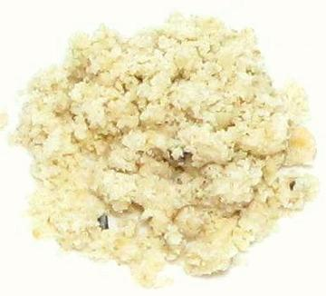

Egusi

[Agusi, Agushi; Citrullus lanatus -or- Citrullus
colocynthis]
This product is made from the seeds of a variety of watermelon and used
throughout the countries of West Africa. The seeds are toasted, shelled
and ground. It is a popular thickner for stews and soups throughout
the region, including Egusi Soup. This thickner is gluten free.
Many sources list these seeds coming from C. colocynthis, but
that seems unlikely. Though C. Colocynthis seeds have been ground
into flour by Berbers, it is adapted to very arid regions and doesn't
grow much south of the Sahara. More likely is a wild variety of
C. lanatus, group Vulgaris, related to the domesticated
watermelon, as these are native to West Africa.
More on Melon Products
Buying:
In North America, prepared and ground Egusi
is available on-line, and probably in a few markets specializing in
African foods. The photo specimen was from Jeb Foods.
Substitutes:
Other seeds of family Cucurbitaceae
can be toasted, shelled and ground. Mexican Pepitas are quite available
and can be used. Easiest to buy them already shelled, toasting them
lightly before cooling and grinding in a food processor.
ml_egusiz 180527 www.clovegarden.com
© Andrew Grygus - agryg@clovegarden.com - Photos on
this page not otherwise credited are ©
cg1.- Linking to and non-commercial use of
this page permitted.